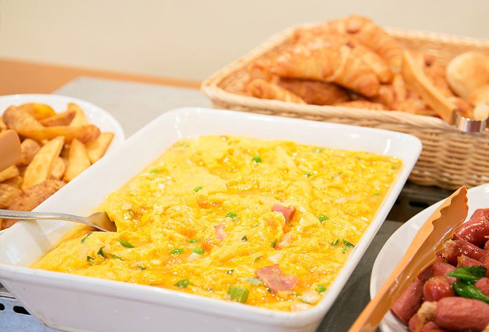
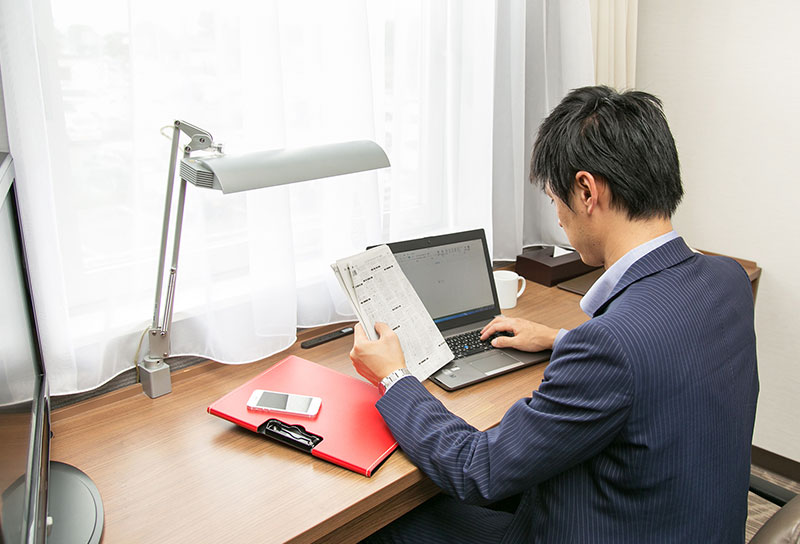
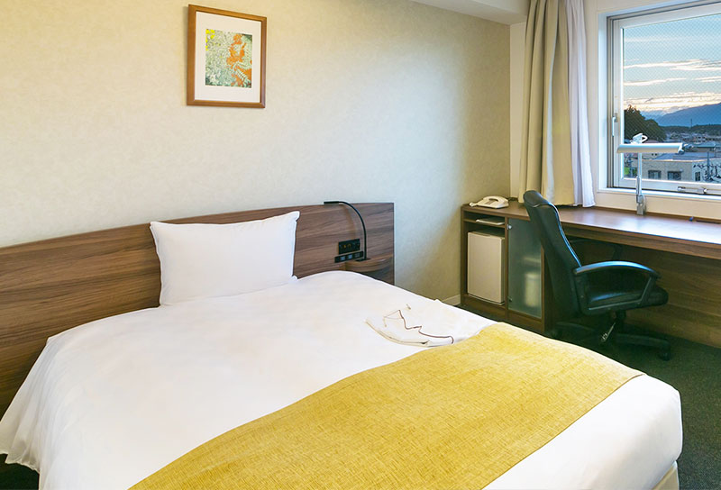

特徴的な設備とサービス Distinctive Facilities & Services
ビジネスや観光、ご家族でのお時間を快適にお過ごしいただけるよう、シンプルかつ機能的な設備とサービスをご提供しております。 We have enriched our simple yet functional facilities and services to ensure a comfortable stay for both business and leisure travelers.

朝食バイキング無料サービス Free Breakfast Buffet
地産地消の和朝食や焼きたてクロワッサンを中心とした洋朝食を無料にてお召し上がりいただけます。
和食
- １番人気の特別な卵かけごはん
- 国内産白米
- 栃木県産こしひかりの成熟玄米
- 料理長特製朝粥
- 高菜漬け・きくらげ昆布・梅干・つぼ漬 他
洋食
- 自家製クロワッサンとダイアモンドギッフェリ
- 胡麻ロールとミニコッペ
- スクランブルエッグ 他
サラダ・シリアルコーナー
- ポテトサラダまたはマカロニサラダ
- コールスローと季節の葉物サラダ
- 海藻サラダ 他
※季節によりメニューが変更になる場合がございます。
朝食の詳細はこちらEnjoy a complimentary Western-style breakfast featuring freshly baked croissants, and a Japanese-style breakfast focused on local ingredients.
Japanese Cuisine
- Our highly popular premium Tamago Kake Gohan (raw egg on rice)
- Domestic white rice
- Mature brown rice (Koshihikari from Tochigi Prefecture)
- Chef's special morning porridge
- Pickled mustard greens, cloud ear mushroom kelp, pickled plum, sweet pickled radish, etc.
Western Cuisine
- Homemade croissants and diamond gipfel
- Sesame rolls and mini coupe bread
- Scrambled eggs, etc.
Salad & Cereal Corner
- Potato salad or macaroni salad
- Coleslaw and seasonal leaf salad
- Seaweed salad, etc.
*The menu is subject to change depending on the season.
Click here for more details on breakfast
充実のビジネス対応 Comprehensive Business Facilities
インターネットはロビーでは無線LAN、客室ではWiFi・有線LANを無料でご利用いただけます。
コピー・FAXはフロントにて承ります（有料）。
客室内のデスクは幅2m以上と大きく、デスクライトや電源コンセントも付いているのでPCを使いながらの書類仕事も快適に行なえます。
ズボンプレッサーや消臭スプレー、コインランドリーもあり、那須への出張に最適です。
Complimentary wireless LAN is available in the lobby, and both Wi-Fi and wired LAN in all guest rooms.
Copy and fax services are available at the front desk (for a fee).
The in-room desks are over 2 meters wide, equipped with a desk lamp and power outlets, providing a comfortable environment for PC work and document tasks.
We also provide trouser presses, fabric deodorizers, and a coin-operated laundry machine, making our hotel ideal for business trips to Nasu.
お子様の添い寝無料 Free Co-sleeping for Children
小学生以下のお子様は保護者の方と同じベッドで添い寝される場合、宿泊料金が無料です。
大人2人小人2人の4人家族でもツインルームで大人2人のときと料金変わらずにお泊りいただけます。
- ※添寝のお子様のタオル・室内着・スリッパ・アメニティ類はつきませんので、持参してください。（有料レンタル可能）
- ※4歳～小学生の添い寝のお子様は朝食バイキングで別途650円頂戴いたします。ご了承ください。
- ※エキストラベッドの追加は出来ません。（デラックスツインを除く）
Children of elementary school age and under can sleep in the same bed with their parents for free.
A family of 4 (2 adults, 2 children) can stay in a Twin Room for the same price as 2 adults.
- *Towels, sleepwear, slippers, and amenities are not provided for co-sleeping children, so please bring your own (rentals are available for a fee).
- *Children aged 4 to elementary school age who are co-sleeping will be charged an additional 650 JPY for the breakfast buffet. Thank you for your understanding.
- *Extra beds cannot be added (Except for Deluxe Twin rooms).

快適な睡眠 Comfortable Sleep
すべてのお部屋のベッドは寝心地の良さを追求したシモンズベッドです。
エアコンは各部屋でコントロール可能なタイプなので、ご自身の好みに合わせた設定が可能です。
窓は開閉可能な防音ペアガラスですので、防音性・快適性を確保しています。
All rooms feature Simmons beds designed for optimal sleeping comfort.
Each room has an individually controlled air conditioner, allowing you to set the temperature to your preference.
The windows are openable soundproof double-glazed glass, ensuring maximum sound insulation and comfort.
設備・サービス一覧表 Facilities and Services Overview
フロントFront Desk
| フロント24時間24H Front Desk | フロントは24時間対応です。 Front desk is available 24 hours. |
|---|---|
| チェックイン／ チェックアウトCheck-in / Check-out |
チェックインは14:00、チェックアウトは11:00となります。チェックインが24時を過ぎる場合は必ずご連絡ください。 ※連絡のない場合、キャンセル扱いになる場合がございます。 Check-in at 14:00, Check-out at 11:00. Please contact us if arriving after midnight. *Without notice, it may be treated as a cancellation. |
| キャンセルポリシーCancellation Policy | 当日のキャンセルは、宿泊料金の50％、ご連絡無しの場合は、宿泊料金の100％を頂戴いたします。 Same-day cancellation: 50% of room rate. No-show: 100%. |
| お支払い方法Payment Method | チェックイン時に現金またはクレジットカード（VISA, JCB, American Express, Diner's Club, Master Card）にてお支払いください。 Please pay by cash or credit card at check-in (VISA, JCB, Amex, Diner's, MasterCard). |
| 荷物預かりLuggage Storage | 宿泊前後でのお預かりが可能です。また、宅配便による事前預かりも承ります。 Storage available before and after stay. Advance delivery by courier is also accepted. |
| コピー・FAXCopy / FAX | フロントにて承ります（有料）。 Available at the front desk (for a fee). |
| クリーニングサービスLaundry Service |
仕上がりは朝出して頂ければ当日仕上げも可能ですが、ものによっては翌日以降になる場合があります。 日曜日または臨時休業の場合は当日仕上げが受けられない場合があります。 Same-day service available if dropped off in the morning (some items may take longer). Not available on Sundays or irregular holidays. |
| マッサージサービスMassage Service | ホテル指定のマッサージは現在休業中のため、大変恐れ入りますが、ご手配は出来かねます。 We deeply apologize, but our designated massage service is currently closed, so we cannot arrange massages at this time. |
| 携帯充電器Mobile Charger |
フロントで貸し出しています。 ※数に限りがございます。 Available for rent at the front desk. *Limited quantity. |
| アイロンIron | フロントで貸し出しております。※数に限りがございます。 Available for rent at the front desk. *Limited quantity. |
| 車イスWheelchair | 貸出用の車イス1台あります。 One wheelchair is available for rent at the front desk. |
ロビーLobby
| 無線LANWireless LAN | FREESPOTによる無線LANです（無料）。 Free wireless LAN (FREESPOT). |
|---|---|
| 自動販売機Vending Machine | ソフトドリンクの自動販売機を設置しています。 Soft drink vending machines available. |
| 製氷機Ice Machine | 無料でご利用できます。 Available free of charge. |
| コインランドリーCoin Laundry | ドラム式洗濯機乾燥機一体型を設置しています（有料）。 Coin-operated washer/dryer available. |
| 電子レンジMicrowave | 宿泊のお客様は無料でご利用いただけます。 Free microwave for guests. |
| 多目的トイレMultipurpose Restrooms | 男性用、女性用、車椅子利用可能トイレがございます。ストーマ装具の交換や洗浄ができる設備がついたトイレも完備しております。・車イス完備（一脚） Men's, Women's, and wheelchair-accessible restrooms. Ostomate-accessible toilets equipped for ostomy bag replacement and washing are also available. ・One wheelchair available. |
| 喫煙ルームSmoking Room | 喫煙者様がご利用できます。 Available for smokers. |
| AEDAED | 自動体外式除細動器をロビーに設置しています。 AED located in the lobby for emergency use. |
客室設備・備品Guest Room Facilities
| テレビTV | 地デジ対応32型ワイド（デラックスツインは42型ワイド2台）。 32-inch wide LCD TV (42-inch in Deluxe Twin). |
|---|---|
| インターネットInternet | Wi-Fi(無線LAN)と有線LANを全室で無料利用可。 Free Wi-Fi and wired LAN in all rooms. |
| 冷暖房Air Conditioning | 個別空調（お部屋ごとに調節可能）。 Individually controlled AC. |
| ベッドBed | 全室シモンズベッド。 Simmons beds in all rooms. |
| 家具設備Furniture/Equip. | 幅2m以上のデスク、電気スタンド、冷蔵庫（空・静音）、ズボンプレッサー、湯沸かしポット。 Writing desk (>2m wide), desk lamp, quiet empty fridge, trouser press, electric kettle. |
| 窓ガラスWindow Glass | 開閉可能な防音ペアガラス。 Openable soundproof double-glazed windows. |
| 水回り等Bathroom, etc. | 温水洗浄器付トイレ、ドライヤー。客室内電話（内線/外線受信のみ）。 Bidet toilet, hair dryer. In-room phone (internal/incoming only). |
アメニティAmenities
| シャンプー等Bath | シャンプー、コンディショナー、ボディーソープ。 Shampoo, conditioner, body soap. |
|---|---|
| 洗面用具Toiletries | 歯ブラシ、髭剃り、ブラシ。 Toothbrush, razor, hairbrush. |
| タオル等Towels | フェイスタオル、バスタオル。 Face towel, bath towel. |
| 室内着・履物Sleepwear | パジャマ、毎日洗いたてのスリッパ。 Pajamas, freshly washed slippers. |
レストランRestaurant
| 朝食Breakfast | 6:45～9:30 和洋食ビュッフェ（宿泊者無料 ※4歳～小学生650円）。 6:45-9:30. Buffet. Free for guests (4-12yo: 650 JPY). |
|---|---|
| 昼食Lunch | 11:30～15:00 ビュッフェおよびアラカルト。 11:30-15:00. Buffet and a la carte. |
| 夕食Dinner | 17:30～20:30 コースおよびアラカルト。 17:30-20:30. Course and a la carte. |
その他Others
| 駐車場Parking | ホテル前62台無料（先着順）。満車時は隣接の有料駐車場（1日400～500円）をご案内。 Free parking for 62 cars (first-come). If full, paid parking nearby (400-500 JPY/day). |
|---|---|
| バリアフリーAccessible | 通路段差なし。1階に多機能トイレあり。段差のないユニバーサルルームあり。 Step-free routes, accessible 1st-floor toilet, universal rooms available. |
| 禁煙エリアSmoking | フロアごとの分煙（全124室中89室が禁煙）。 Segmented by floor (89 non-smoking rooms out of 124). |
| 防火訓練Fire Drill | 外部専門家を招いて毎月実施しております。 Conducted monthly with external experts. |
| ホテル前 セブンイレブン7-Eleven (In Front of Hotel) |
営業時間は、6:00～24:00まで。 Open from 6:00 to 24:00. |